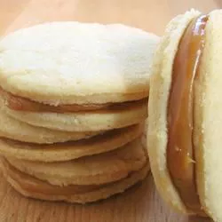

Alfajor

Description
An alfajore is a traditional cookie made most commonly in South America. There are many different versions and ways to make this cookie, but I believe this is the easiest way, with only 5 ingredients. It takes a while to make though.
Ingredients
- 1 (14 ounce) can sweetened condensed milk
- 7 tablespoons unsalted butter, softened
- 7 tablespoons white sugar
- 1 large egg, beaten
- 7 tablespoons all-purpose flour
Steps
- Place the entire, unopened can of condensed milk in a large saucepan. Fill the saucepan with water and bring to a boil. Lower heat to a simmer and cook until milk inside has caramelized, about 2 hours.
- Remove from the heat and set aside to cool while you make the cookies.
- Preheat the oven to 325 degrees F (165 degrees C).
- Beat butter and sugar together in a bowl with an electric mixer until creamy. Mix in egg, then mix in flour until well combined.
- Drop batter by small teaspoonfuls onto an ungreased cookie sheet. Dip your finger into flour, and pat each cookie into a very thin, little circle (about the size of a quarter).
- Bake in the preheated oven until just starting to brown around the edges and no longer doughy in the centers, 10 to 12 minutes. Cool on the cookie sheet for 1 minute before removing to a wire rack to cool, 8 to 10 minutes more.
- Sandwich cooled cookies together with the caramelized condensed milk.